|
The Boost Statechart Library
Performance
|
- Speed versus scalability
tradeoffs
- Memory management
customization
- RTTI customization
- Resource usage
Quite a bit of effort has gone into making the library fast for small
simple machines and scaleable at the same time (this applies only to
state_machine<>, there still is some room for optimizing
fifo_scheduler<>, especially for multi-threaded builds).
While I believe it should perform reasonably in most applications, the
scalability does not come for free. Small, carefully handcrafted state
machines will thus easily outperform equivalent Boost.Statechart machines.
To get a picture of how big the gap is, I implemented a simple benchmark in
the BitMachine example. The Handcrafted example is a handcrafted variant of
the 1-bit-BitMachine implementing the same benchmark.
I tried to create a fair but somewhat unrealistic worst-case
scenario:
- For both machines exactly one object of the only event is allocated
before starting the test. This same object is then sent to the machines
over and over
- The Handcrafted machine employs GOF-visitor double dispatch. The
states are preallocated so that event dispatch & transition amounts
to nothing more than two virtual calls and one pointer assignment
The Benchmarks - running on a 3.2GHz Intel Pentium 4 - produced the
following dispatch and transition times per event:
- Handcrafted:
- MSVC7.1: 10ns
- GCC3.4.2: 20ns
- Intel9.0: 20ns
- 1-bit-BitMachine with customized memory management:
- MSVC7.1: 150ns
- GCC3.4.2: 320ns
- Intel9.0: 170ns
Although this is a big difference I still think it will not be
noticeable in most real-world applications. No matter whether an
application uses handcrafted or Boost.Statechart machines it will...
- almost never run into a situation where a state machine is swamped
with as many events as in the benchmarks. A state machine will almost
always spend a good deal of time waiting for events (which typically come
from a human operator, from machinery or from electronic devices over
often comparatively slow I/O channels). Parsers are just about the only
application of FSMs where this is not the case. However, parser FSMs are
usually not directly specified on the state machine level but on a higher
one that is better suited for the task. Examples of such higher levels
are: Boost.Regex, Boost.Spirit, XML Schemas, etc. Moreover, the nature of
parsers allows for a number of optimizations that are not possible in a
general-purpose FSM framework.
Bottom line: While it is possible to implement a parser with this
library, it is almost never advisable to do so because other approaches
lead to better performing and more expressive code
- often run state machines in their own threads. This adds considerable
locking and thread-switching overhead. Performance tests with the
PingPong example, where two asynchronous state machines exchange events,
gave the following times to process one event and perform the resulting
in-state reaction (using the library with
boost::fast_pool_allocator<>):
- Single-threaded (no locking and waiting): 840ns / 840ns
- Multi-threaded with one thread (the scheduler uses mutex locking
but never has to wait for events): 6500ns / 4800ns
- Multi-threaded with two threads (both schedulers use mutex
locking and exactly one always waits for an event): 14000ns /
7000ns
As mentioned above, there definitely is some room to improve the
timings for the asynchronous machines. Moreover, these are very crude
benchmarks, designed to show the overhead of locking and thread context
switching. The overhead in a real-world application will typically be
smaller and other operating systems can certainly do better in this
area. However, I strongly believe that on most platforms the threading
overhead is usually larger than the time that Boost.Statechart spends
for event dispatch and transition. Handcrafted machines will inevitably
have the same overhead, making raw single-threaded dispatch and
transition speed much less important
- almost always allocate events with
new and destroy them
after consumption. This will add a few cycles, even if event memory
management is customized
- often use state machines that employ orthogonal states and other
advanced features. This forces the handcrafted machines to use a more
adequate and more time-consuming book-keeping
Therefore, in real-world applications event dispatch and transition not
normally constitutes a bottleneck and the relative gap between handcrafted
and Boost.Statechart machines also becomes much smaller than in the
worst-case scenario.
Detailed performance data
In an effort to identify the main performance bottleneck, the example
program "Performance" has been written. It measures the time that is spent
to process one event in different BitMachine variants. In contrast to the
BitMachine example, which uses only transitions, Performance uses a varying
number of in-state reactions together with transitions. The only difference
between in-state-reactions and transitions is that the former neither enter
nor exit any states. Apart from that, the same amount of code needs to be
run to dispatch an event and execute the resulting action.
The following diagrams show the average time the library spends to
process one event, depending on the percentage of in-state reactions
employed. 0% means that all triggered reactions are transitions. 100% means
that all triggered reactions are in-state reactions. I draw the following
conclusions from these measurements:
- The fairly linear course of the curves suggests that the measurements
with a 100% in-state reaction ratio are accurate and not merely a product
of optimizations in the compiler. Such optimizations might have been
possible due to the fact that in the 100% case it is known at
compile-time that the current state will never change
- The data points with 100% in-state reaction ratio and speed optimized
RTTI show that modern compilers seem to inline the complex-looking
dispatch code so aggressively that dispatch is reduced to little more
than it actually is, one virtual function call followed by a linear
search for a suitable reaction. For instance, in the case of the 1-bit
Bitmachine, Intel9.0 seems to produce dispatch code that is equally
efficient like the two virtual function calls in the Handcrafted
machine
- On all compilers and in all variants the time spent in event dispatch
is dwarfed by the time spent to exit the current state and enter the
target state. It is worth noting that BitMachine is a flat and
non-orthogonal state machine, representing a close-to-worst case.
Real-world machines will often exit and enter multiple states during a
transition, what further dwarfs pure dispatch time. This makes the
implementation of constant-time dispatch (as requested by a few people
during formal review) an undertaking with little merit. Instead, the
future optimization effort will concentrate on state-entry and
state-exit
- Intel9.0 seems to have problems to optimize/inline code as soon as
the amount of code grows over a certain threshold. Unlike with the other
two compilers, I needed to compile the tests for the 1, 2, 3 and 4-bit
BitMachine into separate executables to get good performance. Even then
was the performance overly bad for the 4-bit BitMachine. It was much
worse when I compiled all 4 tests into the same executable. This surely
looks like a bug in the compiler
Out of the box
The library is used as is, without any optimizations/modifications.
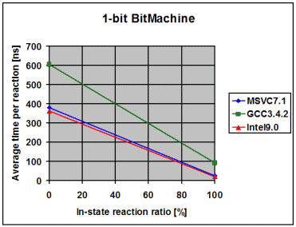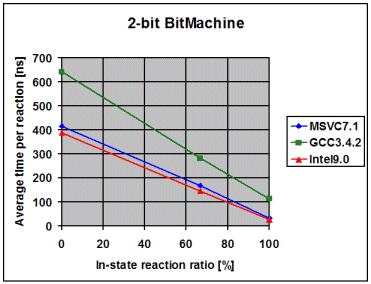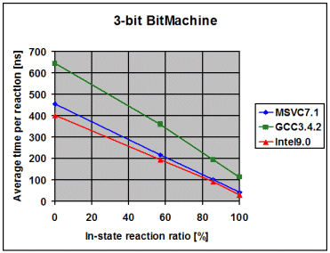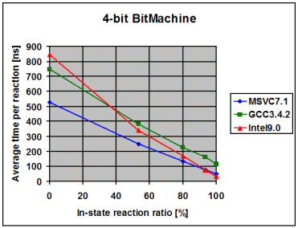
Native RTTI
The library is used with BOOST_STATECHART_USE_NATIVE_RTTI
defined.
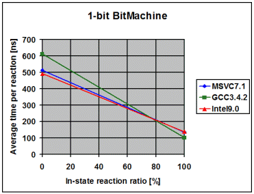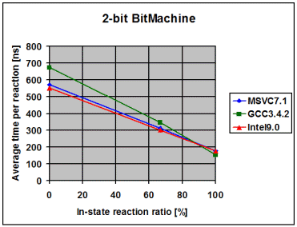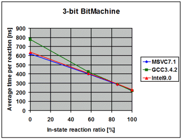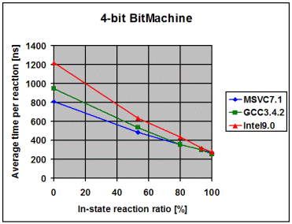
Customized memory-management
The library is used with customized memory management
(boost::fast_pool_allocator).
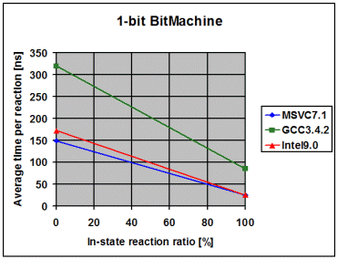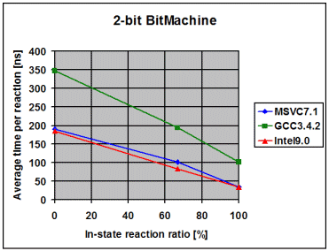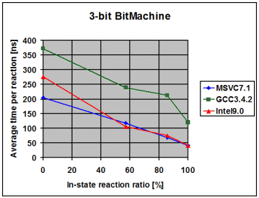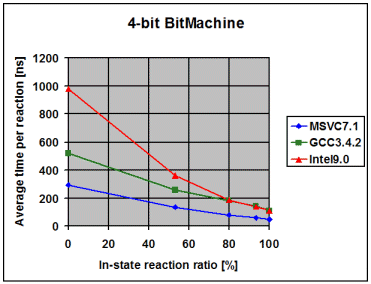
At the heart of every state machine lies an implementation of double
dispatch. This is due to the fact that the incoming event and the
active state define exactly which reaction the state machine will produce.
For each event dispatch, one virtual call is followed by a linear search
for the appropriate reaction, using one RTTI comparison per reaction. The
following alternatives were considered but rejected:
- Acyclic
visitor: This double-dispatch variant satisfies all scalability
requirements but performs badly due to costly inheritance tree
cross-casts. Moreover, a state must store one v-pointer for each
reaction what slows down construction and makes memory management
customization inefficient. In addition, C++ RTTI must inevitably be
turned on, with negative effects on executable size. Boost.Statechart
originally employed acyclic visitor and was about 4 times slower than it
is now (MSVC7.1 on Intel Pentium M). The dispatch speed might be better
on other platforms but the other negative effects will remain
- GOF
Visitor: The GOF Visitor pattern inevitably makes the whole machine
depend upon all events. That is, whenever a new event is added there is
no way around recompiling the whole state machine. This is contrary to
the scalability requirements
- Single two-dimensional array of function pointers: To satisfy
requirement 6, it should be possible to spread a single state machine
over several translation units. This however means that the dispatch
table must be filled at runtime and the different translation units must
somehow make themselves "known", so that their part of the state machine
can be added to the table. There simply is no way to do this
automatically and portably. The only portable way that a state
machine distributed over several translation units could employ
table-based double dispatch relies on the user. The programmer(s) would
somehow have to manually tie together the various pieces of the
state machine. Not only does this scale badly but is also quite
error-prone
Out of the box, everything (event objects, state objects, internal data,
etc.) is allocated through std::allocator< void > (the
default for the Allocator template parameter). This should be satisfactory
for applications meeting the following prerequisites:
- There are no deterministic reaction time (hard real-time)
requirements
- The application will never run long enough for heap fragmentation to
become a problem. This is of course an issue for all long running
programs not only the ones employing this library. However, it should be
noted that fragmentation problems could show up earlier than with
traditional FSM frameworks
Should an application not meet these prerequisites, Boost.Statechart's
memory management can be customized as follows:
- By passing a model of the standard Allocator concept to the class
templates that support a corresponding parameter
(
event<>, state_machine<>,
asynchronous_state_machine<>,
fifo_scheduler<>, fifo_worker<>).
This redirects all allocations to the passed custom allocator and should
satisfy the needs of just about any project
- Additionally, it is possible to separately customize
state memory management by overloading
operator new()
and operator delete() for all state classes but this is
probably only useful under rare circumstances
RTTI is used for event dispatch and
state_downcast<>(). Currently, there are exactly two
options:
- By default, a speed-optimized internal implementation is
employed
- The library can be instructed to use native C++ RTTI instead by
defining
BOOST_STATECHART_USE_NATIVE_RTTI
There are 2 reasons to favor 2:
Memory
On a 32-bit box, one empty active state typically needs less than 50
bytes of memory. Even very complex machines will usually have less
than 20 simultaneously active states so just about every machine should run
with less than one kilobyte of memory (not counting event queues).
Obviously, the per-machine memory footprint is offset by whatever
state-local members the user adds.
Processor cycles
The following ranking should give a rough picture of what feature will
consume how many cycles:
state_cast<>(): By far the most cycle-consuming
feature. Searches linearly for a suitable state, using one
dynamic_cast per visited state- State entry and exit: Profiling of the fully optimized
1-bit-BitMachine suggested that roughly 3 quarters of the total event
processing time is spent destructing the exited state and constructing
the entered state. Obviously, transitions where the innermost common context is
"far" from the leaf states and/or with lots of orthogonal states can
easily cause the destruction and construction of quite a few states
leading to significant amounts of time spent for a transition
state_downcast<>(): Searches linearly for the
requested state, using one virtual call and one RTTI comparison per
visited state- Deep history: For all innermost states inside a state passing either
has_deep_history or has_full_history to its
state base class, a binary search through the (usually small) history map
must be performed on each exit. History slot allocation is performed
exactly once, at first exit
- Shallow history: For all direct inner states of a state passing
either
has_shallow_history or has_full_history
to its state base class, a binary search through the (usually small)
history map must be performed on each exit. History slot allocation is
performed exactly once, at first exit
- Event dispatch: One virtual call followed by a linear search for a
suitable reaction, using one RTTI
comparison per visited reaction
- Orthogonal states: One additional virtual call for each exited state
if there is more than one active leaf state before a transition.
It should also be noted that the worst-case event dispatch time is
multiplied in the presence of orthogonal states. For example, if two
orthogonal leaf states are added to a given state configuration, the
worst-case time is tripled

Revised
03 December, 2006
Copyright © 2003-2006
Andreas Huber Dönni
Distributed under the Boost Software License, Version 1.0. (See
accompanying file LICENSE_1_0.txt or
copy at http://www.boost.org/LICENSE_1_0.txt)